|
Результаты
Спрятать верно решенные Рекомендуем справочные материалы на Сайте элементарной математики Дмитрия Гущина Из части B правильно решено 0 из 164 заданий. Решения ↑ Задание 1 № 26692 тип B14 (решено неверно или не решено) Найдите наибольшее значение функции 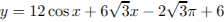 на отрезке Решение. Найдем производную заданной функции: 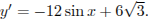 Найдем нули производной на заданном отрезке: 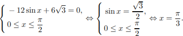 Определим знаки производной функции на заданном отрезке и изобразим на рисунке поведение функции: 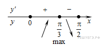 В точке 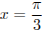 заданная функция имеет максимум, являющийся ее наибольшим значением на заданном отрезке. Найдем это наибольшее значение: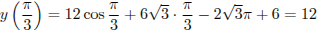. Ответ: 12. Ваш ответ: нет ответа. Правильный ответ: 12 Обсудить ВКонтакте Сообщить об ошибке ↑ Задание 2 № 26725 тип B14 (решено неверно или не решено) Найдите точку максимума функции  . .Решение. Найдем производную заданной функции: 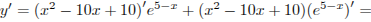
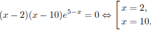 Определим знаки производной функции и изобразим на рисунке поведение функции:Ответ: 10. Ваш ответ: нет ответа. Правильный ответ: 10 ↑ Задание 3 № 77472 тип B14 (решено неверно или не решено) Найдите точку минимума функции 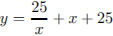. Решение. Найдем производную заданной функции: 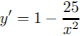. Найдем нули производной: 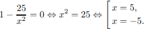 Определим знаки производной функции и изобразим на рисунке поведение функции: 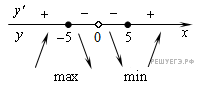 Искомая точка минимума Ответ: 5. Ваш ответ: нет ответа. Правильный ответ: 5 ↑ Задание 4 № 77428 тип B14 (решено неверно или не решено) Найдите точку минимума функции 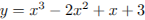. Решение. Найдем производную заданной функции: 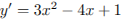. Найдем нули производной: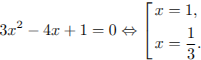 Определим знаки производной функции и изобразим на рисунке поведение функции:Ответ: 1. Ваш ответ: нет ответа. Правильный ответ: 1 ↑ Задание 5 № 77464 тип B14 (решено неверно или не решено) Найдите наибольшее значение функции  на отрезке на отрезке Решение. Заметим, что 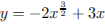 и найдем производную этой функции: 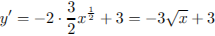. Найдем нули производной: 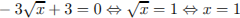. Определим знаки производной функции и изобразим на рисунке поведение функции:
Ответ: 1. Ваш ответ: нет ответа. Правильный ответ: 1 ↑ Задание 6 № 77456 тип B14 (решено неверно или не решено) Найдите наибольшее значение функции 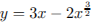 на отрезке Решение. Найдем производную заданной функции: 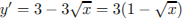. Найдем нули производной: Определим знаки производной функции и изобразим на рисунке поведение функции: Ответ: 1. Ваш ответ: нет ответа. Правильный ответ: 1 ↑ Задание 7 № 129961 тип B14 (решено неверно или не решено) Найдите наибольшее значение функции 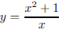 на отрезке  . .Решение. Найдем производную заданной функции: Производная обращается в нуль в точках 1 и −1, заданному отрезку принадлежит только число −1. Определим знаки производной функции и изобразим на рисунке поведение функции на заданном отрезке: 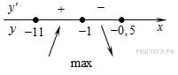 Наибольшим значением функции на заданном отрезке будет 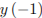. Найдем его: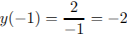. Ответ: −2. Ваш ответ: нет ответа. Правильный ответ: -2 Гость 02.05.2013 12:55: Добрый день! Я не совсем понимаю, почему в промежутке от -11 до -1 знак +. Объясните, пожалуйста. Заранее благодарю. Служба поддержки:
Взяли пробную точку и подставили. ↑ Задание 8 № 77481 тип B14 (решено неверно или не решено) Найдите наибольшее значение функции 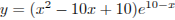 на отрезке 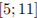. Решение. Найдем производную заданной функции: 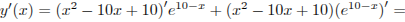 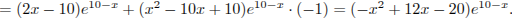 Найдем нули производной: 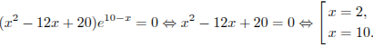 Определим знаки производной функции и изобразим на рисунке поведение функции: 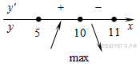
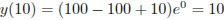. Ответ: 10. Ваш ответ: нет ответа. Правильный ответ: 10 ↑ Задание 9 № 26703 тип B14 (решено неверно или не решено) Найдите наименьшее значение функции  на отрезке на отрезке Решение. Найдем производную заданной функции: 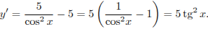 Найденная производная неотрицательна на заданном отрезке, заданная функция возрастает на нем, поэтому наименьшим значением функции на отрезке является 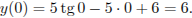Ответ: 6. Ваш ответ: нет ответа. Правильный ответ: 6 ↑ Задание 10 № 77460 тип B14 (решено неверно или не решено) Найдите наименьшее значение функции  на отрезке на отрезке Решение. Найдем производную заданной функции: 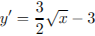. Найдем нули производной: 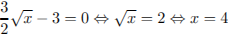. Определим знаки производной функции и изобразим на рисунке поведение функции: 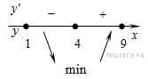 В точкеОтвет: −3. Ваш ответ: нет ответа. Правильный ответ: -3 ↑ Задание 11 № 26728 тип B14 (решено неверно или не решено) Найдите точку максимума функции 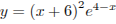. Решение. Найдем производную заданной функции: 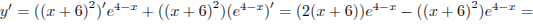
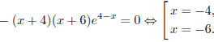 Определим знаки производной функции и изобразим на рисунке поведение функции: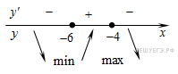 Искомая точка максимума 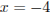.Ответ: −4. Ваш ответ: нет ответа. Правильный ответ: -4 ↑ Задание 12 № 26734 тип B14 (решено неверно или не решено) Найдите точку минимума функции 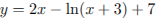. Решение. Найдем производную заданной функции: 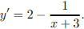 Найдем нули производной:Определим знаки производной функции и изобразим на рисунке поведение функции: Искомая точка минимума  . . Ответ: −2,5. Ваш ответ: нет ответа. Правильный ответ: -2,5 ↑ Задание 13 № 77441 тип B14 (решено неверно или не решено) Найдите наименьшее значение функции  на отрезке . на отрезке .Решение. Найдем производную заданной функции: . Найдем нули производной:Определим знаки производной функции и изобразим на рисунке поведение функции: В точке заданная функция имеет минимум, являющийся ее наименьшим значением на заданном отрезке. Найдем это наименьшее значение: . Ответ: 0. Ваш ответ: нет ответа. Правильный ответ: 0 ↑ Задание 14 № 77429 тип B14 (решено неверно или не решено) Найдите наименьшее значение функции на отрезке Решение. Найдем производную заданной функции: . Найдем нули производной:Определим знаки производной функции и изобразим на рисунке поведение функции: В точке . Ответ: 3. Ваш ответ: нет ответа. Правильный ответ: 3 ↑ Задание 15 № 245180 тип B14 (решено неверно или не решено) Найдите наибольшее значение функции .
Решение. Поскольку функция возрастающая, она достигает наибольшего значения в той точке, в которой достигает наибольшего значения выражение, стоящее под знаком логарифма. Квадратный трехчлен с отрицательным старшим коэффициентом достигает наибольшего значения в точке в нашем случае — в точке −1. Значение функции в этой точке Ответ: 4. Ваш ответ: нет ответа. Правильный ответ: 4 Мария Прохорова (Жирновск) 01.06.2013 16:26: 4-2*(-1)=4+2=6 (- на - дает + "4-(-2)") Поэтому 6-1+3=8 Петр Мурзин (Казань):
Вы не взяли логарифм от квадратного трехчлена. log5(4 - 2*(-1) - 1) + 3 = log5(4 + 2 - 1) + 3 = log5(5) + 3 = 1 + 3 = 4. ↑ Задание 16 № 77494 тип B14 (решено неверно или не решено) Найдите наибольшее значение функции  на отрезке на отрезке  . .Решение. Найдем производную заданной функции: Найдем нули производной: Определим знаки производной функции и изобразим на рисунке поведение функции: Ответ: −5. Ваш ответ: нет ответа. Правильный ответ: -5 ↑ Задание 17 № 286803 тип B14 (решено неверно или не решено) Найдите наименьшее значение функции  . .Решение. Выделим полный квадрат: Отсюда имеем: Поэтому наименьшее значние функции достигается в точке −11, и оно равно 1. Ответ: 1. Ваш ответ: нет ответа. Правильный ответ: 1 ↑ Задание 18 № 77482 тип B14 (решено неверно или не решено) Найдите наименьшее значение функции  на отрезке на отрезке Решение. Найдем производную заданной функции:
Найдем нули производной:
Определим знаки производной функции и изобразим на рисунке поведение функции: В точке Ответ: 0. Ваш ответ: нет ответа. Правильный ответ: 0 ↑ Задание 19 № 129931 тип B14 (решено неверно или не решено) Найдите наименьшее значение функции на отрезке Решение. Найдем производную заданной функции: . Производная обращается в нуль в точках 11 и −11. Определим знаки производной функции и изобразим на рисунке поведение функции на заданном отрезке: Наименьшим значением функции на заданном отрезке будет . Найдем его: . Ответ: 22. Ваш ответ: нет ответа. Правильный ответ: 22 ↑ Задание 20 № 77469 тип B14 (решено неверно или не решено) Найдите наименьшее значение функции на отрезке Решение. Найдем производную заданной функции:
Производная обращается в нуль в точках 5 и −5. Определим знаки производной функции и изобразим на рисунке поведение функции на заданном отрезке: Наименьшим значением функции на заданном отрезке будет ее значение в точке 5. Найдем его: .
Ответ: 10. Ваш ответ: нет ответа. Правильный ответ: 10 ↑ Задание 21 № 26710 тип B14 (решено неверно или не решено) Найдите точку минимума функции  . .Решение. Найдем производную заданной функции: Найдем нули производной: Определим знаки производной функции и изобразим на рисунке поведение функции: Искомая точка минимума . Ответ: −17. Ваш ответ: нет ответа. Правильный ответ: -17 ↑ Задание 22 № 77486 тип B14 (решено неверно или не решено) Найдите точку минимума функции . Решение. Заметим, что . Область определения функции — открытый луч . Найдем производную заданной функции:
Найдем нули производной: . Найденная точка лежит на луче . Определим знаки производной функции и изобразим на рисунке поведение функции: Искомая точка минимума . Ответ: −2. Ваш ответ: нет ответа. Правильный ответ: -2 ↑ Задание 23 № 245183 тип B14 (решено неверно или не решено) Найдите наименьшее значение функции
Решение. Поскольку функция возрастающая, заданная функция достигает наименьшего значения в той же точке, в которой достигает наименьшего значения выражение Квадратный трехчлен с положительным старшим коэффициентом достигает наименьшего значения в точке в нашем случае — в точке −1. Значение функции в этой точке равно Ответ: 16. Ваш ответ: нет ответа. Правильный ответ: 16 ↑ Задание 24 № 77475 тип B14 (решено неверно или не решено) Найдите наименьшее значение функции  на отрезке на отрезке Решение. Найдем производную заданной функции:
Определим знаки производной функции и изобразим на рисунке поведение функции: В точке заданная функция имеет минимум, являющийся ее наименьшим значением на заданном отрезке. Найдем это наименьшее значение:. Ответ: −1. Ваш ответ: нет ответа. Правильный ответ: -1 ↑ Задание 25 № 77463 тип B14 (решено неверно или не решено) Найдите точку максимума функции  . .Решение. Найдем производную заданной функции: . Найдем нули производной: . Определим знаки производной функции и изобразим на рисунке поведение функции: Искомая точка максимума Ответ: 4. Ваш ответ: нет ответа. Правильный ответ: 4 ↑ Задание 26 № 282861 тип B14 (решено неверно или не решено) Найдите наименьшее значение функции на отрезке  . .
Решение. Найдем производную заданной функции:
Определим знаки производной функции на заданном отрезке и изобразим на рисунке поведение функции: В точке заданная функция имеет минимум, являющийся ее наименьшим значением на заданном отрезке. Найдем это наименьшее значение: . Ответ: −1. Ваш ответ: нет ответа. Правильный ответ: -1 ↑ Задание 27 № 77491 тип B14 (решено неверно или не решено) Найдите точку минимума функции . Решение. Найдем производную заданной функции: Найдем нули производной: Определим знаки производной функции и изобразим на рисунке поведение функции: Искомая точка минимума Ответ: 1. Ваш ответ: нет ответа. Правильный ответ: 1 Василий Алябьев (Москва) 07.05.2012 12:59: Здравствуйте, тут представлены примеры с натуральными логарифмами, а на экзамене могут быть ещё обычные логарифмы. На этом сайте есть такие примеры?. заранее спасибо. Служба поддержки:
Есть несколько заданий в разделе «Исследование функций без помощи производной». ↑ Задание 28 № 287203 тип B14 (решено неверно или не решено) Найдите наименьшее значение функции Решение. Квадратный трехчлен с положительным старшим коэффициентом достигает наименьшего значения в точке , в нашем случае — в точке −7. Функция  в этой точке принимает значение . Поскольку логарифмическая функция с основанием, большим 1, возрастает, найденное значение является искомым наименьшим значением заданной функции. в этой точке принимает значение . Поскольку логарифмическая функция с основанием, большим 1, возрастает, найденное значение является искомым наименьшим значением заданной функции.
Ответ: 7. Ваш ответ: нет ответа. Правильный ответ: 7 ↑ Задание 29 № 287103 тип B14 (решено неверно или не решено) Найдите точку минимума функции Решение. Квадратный трехчлен с положительным старшим коэффициентом достигает минимума в точке , в нашем случае — в точке 15. Поскольку функция возрастает, и заданная функция определена в точке 15, она также достигает в ней минимума. Ответ: 15. Ваш ответ: нет ответа. Правильный ответ: 15 ↑ Задание 30 № 26718 тип B14 (решено неверно или не решено) Найдите наименьшее значение функции  на отрезке на отрезке  . .Решение. Функция определена и дифференцируема на заданном отрезке. Найдем ее производную: Найдем нули производной на заданном отрезке: Определим знаки производной функции на заданном отрезке, и изобразим на рисунке поведение функции: В точке заданная функция имеет минимум, являющийся ее наименьшим значением на заданном отрезке. Найдем это наименьшее значение: . Ответ: 4. Ваш ответ: нет ответа. Правильный ответ: 4 ↑ Задание 31 № 77420 тип B14 (решено неверно или не решено) Найдите точку минимума функции  . .Решение. Найдем производную заданной функции: Найдем нули производной: Определим знаки производной функции и изобразим на рисунке поведение функции: Искомая точка минимума Ответ: 4. Ваш ответ: нет ответа. Правильный ответ: 4 ↑ Задание 32 № 26695 тип B14 (решено неверно или не решено) Найдите наибольшее значение функции  на отрезке . на отрезке .Решение. Найдем производную заданной функции: Уравнение не имеет решений, производная положительна при всех значениях переменной, поэтому заданная функция является возрастающей. Следовательно, наибольшим значением функции на заданном отрезке является Ответ: 5. Ваш ответ: нет ответа. Правильный ответ: 5 ↑ Задание 33 № 245175 тип B14 (решено неверно или не решено) Найдите наименьшее значение функции .
Решение. Выделим полный квадрат: Отсюда имеем: Поэтому наименьшее значние функции достигается в точке 3, и оно равно 2. Ответ: 2. Примечание. Приведем другое решение. Поскольку функция возрастающая, а подкоренное выражение положительно при всех значениях переменной, заданная функция достигает наименьшего значения в той же точке, в которой достигает наименьшего значения подкоренное выражение. Квадратный трехчлен с положительным старшим коэффициентом достигает наименьшего значения в точке , в нашем случае — в точке 3, и оно равно 4. Следовательно, наименьшее значение заданной функции . Ваш ответ: нет ответа. Правильный ответ: 2 ↑ Задание 34 № 245184 тип B14 (решено неверно или не решено) Найдите наибольшее значение функции
Решение. Поскольку функция возрастающая, заданная функция достигает наибольшего значения в той же точке, в которой достигает наибольшего значения выражение Квадратный трехчлен с отрицательным старшим коэффициентом достигает наибольшего значения в точке в нашем случае — в точке −3. Значение функции в этой точке равно Ответ: 9. Ваш ответ: нет ответа. Правильный ответ: 9 ↑ Задание 35 № 77439 тип B14 (решено неверно или не решено) Найдите точку максимума функции .Решение. Найдем производную заданной функции: . Найдем нули производной: Определим знаки производной функции и изобразим на рисунке поведение функции: Искомая точка максимума . Ответ: 6. Ваш ответ: нет ответа. Правильный ответ: 6 ↑ Задание 36 № 26694 тип B14 (решено неверно или не решено) Найдите наименьшее значение функции  на отрезке на отрезке  . .Решение. Найдем производную заданной функции: Уравнение не имеет решений, производная отрицательна при всех значениях переменной, поэтому заданная функция является убывающей. Следовательно, наименьшим значением функции на заданном отрезке является Ответ: 9. Ваш ответ: нет ответа. Правильный ответ: 9 ↑ Задание 37 № 77495 тип B14 (решено неверно или не решено) Найдите наименьшее значение функции  на отрезке . на отрезке .Решение. Найдем производную заданной функции: Найдем нули производной: Определим знаки производной функции и изобразим на рисунке поведение функции: В точке заданная функция имеет минимум, являющийся ее наименьшим значением на заданном отрезке. Найдем это наименьшее значение: . Ответ: 18. Ваш ответ: нет ответа. Правильный ответ: 18 ↑ Задание 38 № 77431 тип B14 (решено неверно или не решено) Найдите точку максимума функции  . .Решение. Найдем производную заданной функции: . Найдем нули производной:Определим знаки производной функции и изобразим на рисунке поведение функции: Искомая точка максимума Ответ: 1. Ваш ответ: нет ответа. Правильный ответ: 1 ↑ Задание 39 № 26719 тип B14 (решено неверно или не решено) Найдите наибольшее значение функции на отрезке  . .Решение. Найдем производную заданной функции: Найдем нули производной на заданном отрезке: Определим знаки производной функции на заданном отрезке и изобразим на рисунке поведение функции: В точке заданная функция имеет максимум, являющийся ее наибольшим значением на заданном отрезке. Найдем это наибольшее значение: . Ответ: 8. Ваш ответ: нет ответа. Правильный ответ: 8 ↑ Задание 40 № 286603 тип B14 (решено неверно или не решено) Найдите точку максимума функции Решение. Квадратный трехчлен с отрицательным старшим коэффициентом достигает максимума в точке , в нашем случае — в точке 6. Поскольку функция возрастающая, а заданная функция определена при найденном значении переменной, она достигает максимума в той же точке, в которой достигает максимума подкоренное выражение. Ответ: 6. Ваш ответ: нет ответа. Правильный ответ: 6 ↑ Задание 41 № 26712 тип B14 (решено неверно или не решено) Найдите точку минимума функции . Решение. Найдем производную заданной функции: Найдем нули производной: Определим знаки производной функции и изобразим на рисунке поведение функции: Искомая точка минимума Ответ: 4. Ваш ответ: нет ответа. Правильный ответ: 4 ↑ Задание 42 № 77492 тип B14 (решено неверно или не решено) Найдите точку максимума функции  , принадлежащую промежутку , принадлежащую промежутку Решение. Найдем производную заданной функции: . На заданном промежутке (первая четверть без граничных точек) синус не обращается в нуль и принимает только положительные значения. Поэтому единственный нуль производной — число 1,5. Определим знаки производной функции: она положительна при x < 1,5 и отрицательна при x > 1,5. Поэтому искомая точка максимума — число 1,5. Ответ: 1,5. Ваш ответ: нет ответа. Правильный ответ: 1,5 ↑ Задание 43 № 77458 тип B14 (решено неверно или не решено) Найдите наибольшее значение функции  на отрезке на отрезке Решение. Найдем производную заданной функции: . Найдем нули производной: Определим знаки производной функции и изобразим на рисунке поведение функции:Найденная производная неотрицательна на заданном отрезке, заданная функция возрастает на нем, поэтому наибольшим значением функции на отрезке является . Ответ: 10. Ваш ответ: нет ответа. Правильный ответ: 10 ↑ Задание 44 № 287003 тип B14 (решено неверно или не решено) Найдите точку максимума функции Решение. Квадратный трехчлен с отрицательным старшим коэффициентом достигает максимума в точке , в нашем случае — в точке −7. Поскольку функция возрастает, и функция  определена в точке −7, она также достигает в ней максимума. определена в точке −7, она также достигает в ней максимума.
Ответ: −7. Ваш ответ: нет ответа. Правильный ответ: -7 ↑ Задание 45 № 26698 тип B14 (решено неверно или не решено) Найдите наименьшее значение функции  на отрезке на отрезке  . .Решение. Найдем производную заданной функции . Уравнение не имеет решений, производная положительна при всех значениях переменной, поэтому заданная функция является возрастающей. Следовательно, наименьшем значением функции на заданном отрезке является
. Ответ: −14. Ваш ответ: нет ответа. Правильный ответ: -14 ↑ Задание 46 № 500254 тип B14 (решено неверно или не решено) Найдите наибольшее значение функции  на отрезке на отрезке Решение. Найдем производную заданной функции: Найдем нули производной на заданном отрезке:
Определим знаки производной функции на заданном отрезке и изобразим на рисунке поведение функции: В точке заданная функция имеет максимум, являющийся ее наибольшим значением на заданном отрезке. Найдем это наибольшее значение: . Ответ: 1. Ваш ответ: нет ответа. Правильный ответ: 1 ↑ Задание 47 № 77445 тип B14 (решено неверно или не решено) Найдите наименьшее значение функции  на отрезке на отрезке Решение. Найдем производную заданной функции: . Найдем нули производной:Определим знаки производной функции и изобразим на рисунке поведение функции: Из рисунка видно, что наименьшее значение функции на заданном отрезке достигается в точке . Оно равно
Ответ: −25. Ваш ответ: нет ответа. Правильный ответ: -25 ↑ Задание 48 № 500645 тип B14 (решено неверно или не решено) Найдите наименьшее значение функции Решение. Заметим, что Наименьшее значение подкоренного выражения достигается в точке 2, но исходная функция в этой точке не определена. В то же время подкоренное выражение обращается в нуль в точках 1 и 3. Поэтому число 0 является наименьшим значением заданной функции. Ответ: 0. Ваш ответ: нет ответа. Правильный ответ: 0 ↑ Задание 49 № 77434 тип B14 (решено неверно или не решено) Найдите наибольшее значение функции  на отрезке на отрезке Решение. Найдем производную заданной функции: . Из уравнения найдем нули производной:Определим знаки производной функции и изобразим на рисунке поведение функции: На отрезке [−2; 0] функция убывает, поэтому она достигает своего наибольшего значения в точке x = −2. Найдем это наибольшее значение: Ответ: 12. Ваш ответ: нет ответа. Правильный ответ: 12 ↑ Задание 50 № 77424 тип B14 (решено неверно или не решено) Найдите точку минимума функции  . .Решение. Найдем производную заданной функции: Найдем нули производной: Определим знаки производной функции и изобразим на рисунке поведение функции: Искомая точка минимума Ответ: 2. Ваш ответ: нет ответа. Правильный ответ: 2 ↑ Задание 51 № 77501 тип B14 (решено неверно или не решено) Найдите точку минимума функции  . .Решение. Найдем производную заданной функции: . Найдем нули производной:
Определим знаки производной функции и изобразим на рисунке поведение функции: Искомая точка минимума Ответ: 1. Ваш ответ: нет ответа. Правильный ответ: 1 ↑ Задание 52 № 77480 тип B14 (решено неверно или не решено) Найдите наименьшее значение функции на отрезке . Решение. Найдем производную заданной функции: . Найдем нули производной:  . .В точке . Ответ: −4. Ваш ответ: нет ответа. Правильный ответ: -4 ↑ Задание 53 № 26721 тип B14 (решено неверно или не решено) Найдите наименьшее значение функции на отрезке Решение. Найдем производную заданной функции: Найдем нули производной на заданном отрезке: Определим знаки производной функции на заданном отрезке и изобразим на рисунке поведение функции: В точке . Ответ: −6. Ваш ответ: нет ответа. Правильный ответ: -6 ↑ Задание 54 № 77425 тип B14 (решено неверно или не решено) Найдите наименьшее значение функции на отрезке Решение. Найдем производную заданной функции: . Производная обращается в нуль в точках 0 и 2, заданному отрезку принадлежит число 2. Определим знаки производной функции и изобразим на рисунке поведение функции: В точке . Ответ: −2. Ваш ответ: нет ответа. Правильный ответ: -2 ↑ Задание 55 № 77474 тип B14 (решено неверно или не решено) Найдите наибольшее значение функции  на отрезке . на отрезке .Решение. Найдем производную заданной функции: . Найденная производная обращается в нуль в точках 3 и −3, из них на отрезке [−4; −1] лежит только точка −3. Определим знаки производной функции и изобразим на рисунке поведение функции: В точке заданная функция имеет максимум, являющийся ее наибольшим значением на заданном отрезке. Найдем это наибольшее значение: Ответ: −6. Ваш ответ: нет ответа. Правильный ответ: -6 Гость 12.11.2012 14:36: Нас просят найти наибольшее значение на отрезке, а не экстремум функции. Необходимо было найти значения функции на концах отрезка, а также в точках экстремума. Только после этого выбрать наибольшее значение. Задача не решена. Антон Лобашов (Тихвин):
Характер возрастания и убывания исследуемой функции на заданном отрезке таков, что значения на концах отрезка меньше, чем в точке максимума. ↑ Задание 56 № 77461 тип B14 (решено неверно или не решено) Найдите точку минимума функции  . .Решение. Найдем производную заданной функции: . Найдем нули производной: . Определим знаки производной функции и изобразим на рисунке поведение функции: Искомая точка минимума Ответ: 4. Ваш ответ: нет ответа. Правильный ответ: 4 ↑ Задание 57 № 315128 тип B14 (решено неверно или не решено) Найдите наибольшее значение функции  на отрезке на отрезке Решение. Найдем производную заданной функции: Сделаем замену и решим полученное уравнение: Вернемся к исходной переменной: Определим знаки производной функции и изобразим на рисунке поведение функции: На отрезке Ответ: 48. Ваш ответ: нет ответа. Правильный ответ: 48 ↑ Задание 58 № 501214 тип B14 (решено неверно или не решено) Найдите наибольшее значение функции на отрезке Решение. Значения функции лежат в пределах отрезка [−1; 1]. Мы ищем наибольшее значение функции, естественно потребовать, чтобы В таком случае на должно быть Это уравнение имеет решение на заданном отрезке: Следовательно, наибольшее значение функции достигается в точке 0, оно равно Приведем другое решение. Функция на заданном отрезке возрастает, принимая все значения от −1 до 0. Функция на отрезке [−1; 0] возрастает, принимая наибольшее значение 1 в точке 0. Следовательно, искомое наибольшее значение функции достигается в точке 0, оно равно 1 + 2 = 3. Ваш ответ: нет ответа. Правильный ответ: 3 ↑ Задание 59 № 77471 тип B14 (решено неверно или не решено) Найдите точку максимума функции . Решение. Найдем производную заданной функции: . Найдем нули производной:
Определим знаки производной функции и изобразим на рисунке поведение функции: Искомая точка максимума . Ответ: −4. Ваш ответ: нет ответа. Правильный ответ: -4 ↑ Задание 60 № 315127 тип B14 (решено неверно или не решено) Найдите наименьшее значение функции  на отрезке . на отрезке .Решение. Найдем производную заданной функции: Найдем нули производной: Отметим на рисунке нули производной и поведение функции на заданном отрезке: Следовательно, наименьшим значением функции на заданном отрезке является ее значение в точке минимума. Найдем его: Ответ: −6. Ваш ответ: нет ответа. Правильный ответ: -6 ↑ Задание 61 № 282860 тип B14 (решено неверно или не решено) Найдите точку минимума функции .
Решение. Найдем производную заданной функции:
Найдем нули производной: Определим знаки производной функции и изобразим на рисунке поведение функции: Искомая точка минимума . Ответ: −3. Ваш ответ: нет ответа. Правильный ответ: -3 ↑ Задание 62 № 77484 тип B14 (решено неверно или не решено) Найдите наименьшее значение функции  на отрезке на отрезке  . .Решение. Найдем производную заданной функции: Найдем нули производной: Определим знаки производной функции и изобразим на рисунке поведение функции: В точке заданная функция имеет минимум, являющийся ее наименьшим значением на заданном отрезке. Найдем это наименьшее значение: . Ответ: 0. Ваш ответ: нет ответа. Правильный ответ: 0 ↑ Задание 63 № 77487 тип B14 (решено неверно или не решено) Найдите точку максимума функции  . .Решение. Найдем производную заданной функции: . Найдем нули производной: . Определим знаки производной функции и изобразим на рисунке поведение функции: Искомая точка максимума . Ответ: −4. Ваш ответ: нет ответа. Правильный ответ: -4 ↑ Задание 64 № 26696 тип B14 (решено неверно или не решено) Найдите наименьшее значение функции  на отрезке на отрезке Решение. Найдем производную заданной функции:  . Найденная производная положительна при всех значениях переменной, поэтому заданная функция является возрастающей. . Найденная производная положительна при всех значениях переменной, поэтому заданная функция является возрастающей.
Следовательно, наименьшим значением функции на заданном отрезке является . Ответ: 16. Ваш ответ: нет ответа. Правильный ответ: 16 ↑ Задание 65 № 245181 тип B14 (решено неверно или не решено) Найдите точку максимума функции  . .Решение. Поскольку функция возрастающая, заданная функция достигает максимума в той же точке, в которой достинает максимума выражение . Квадратный трехчлен с отрицательным старшим коэффициентом достигает максимума в точке , в нашем случае — в точке 3. Ответ: 3. Ваш ответ: нет ответа. Правильный ответ: 3 ↑ Задание 66 № 245176 тип B14 (решено неверно или не решено) Найдите наибольшее значение функции  . .
Решение. Выделим полный квадрат: Отсюда имеем: Поэтому наибольшее значние функции достигается в точке −2, и оно равно 3. Ответ: 3. Примечание. Приведем другое решение. Квадратный трехчлен с отрицательным старшим коэффициентом достигает наибольшего значения в точке . В нашем случае наибольшее значение достигается в точке −2 и равно 9. Поскольку функция возрастает и определена в точке 9, для исходной функции имеем: .Ваш ответ: нет ответа. Правильный ответ: 3 ↑ Задание 67 № 77449 тип B14 (решено неверно или не решено) Найдите наименьшее значение функции  на отрезке на отрезке Решение. Найдем производную заданной функции: . Найдем нули производной: Определим знаки производной функции и изобразим на рисунке поведение функции:Найденная производная неотрицательна на заданном отрезке, заданная функция возрастает на нем, поэтому наименьшим значением функции на отрезке является  . . Ответ: −13. Ваш ответ: нет ответа. Правильный ответ: -13 ↑ Задание 68 № 500081 тип B14 (решено неверно или не решено) Найдите точку минимума функции  Решение. Минимуму заданной функции соответствует максимум функции при Поскольку найденная производная в окрестности точки −1 меняет знак с плюса на минус и в ней выполнено неравенство (*). Тем самым, она является искомой. Ответ: −1. Ваш ответ: нет ответа. Правильный ответ: -1 ↑ Задание 69 № 77457 тип B14 (решено неверно или не решено) Найдите точку максимума функции .Решение. Найдем производную заданной функции: . Найдем нули производной: . Определим знаки производной функции и изобразим на рисунке поведение функции: Искомая точка максимума . Ответ: 9. Ваш ответ: нет ответа. Правильный ответ: 9 ↑ Задание 70 № 77453 тип B14 (решено неверно или не решено) Найдите точку минимума функции  . .Решение. Найдем производную заданной функции: . Найдем нули производной: Определим знаки производной функции и изобразим на рисунке поведение функции: Искомая точка минимума Ответ: 4. Ваш ответ: нет ответа. Правильный ответ: 4 ↑ Задание 71 № 77466 тип B14 (решено неверно или не решено) Найдите наибольшее значение функции на отрезке Решение. Заметим, что  и найдем производную этой функции: и найдем производную этой функции:
. Найдем нули производной:Определим знаки производной функции и изобразим на рисунке поведение функции:Найденная производная неотрицательна на заданном отрезке, заданная функция возрастает на нем, поэтому наибольшим значением функции на отрезке является . Ответ: 10. Ваш ответ: нет ответа. Правильный ответ: 10 ↑ Задание 72 № 26701 тип B14 (решено неверно или не решено) Найдите наименьшее значение функции на отрезке  . .Решение. Найдем производную заданной функции: Уравнение не имеет решений, производная положительна при всех значениях переменной, поэтому заданная функция является возрастающей. Следовательно, наименьшим значением функции на заданном отрезке является
Ответ: −16,5. Ваш ответ: нет ответа. Правильный ответ: -16,5 ↑ Задание 73 № 26723 тип B14 (решено неверно или не решено) Найдите точку минимума функции  . .Решение. Найдем производную заданной функции:
Определим знаки производной функции и изобразим на рисунке поведение функции: Искомая точка минимума . Ответ: 10. Ваш ответ: нет ответа. Правильный ответ: 10 ↑ Задание 74 № 245178 тип B14 (решено неверно или не решено) Найдите точку минимума функции .
Решение. Квадратный трехчлен с положительным старшим коэффициентом достигает минимума в точке , в нашем случае — в точке 3. Поскольку функция возрастает, и заданная функция определена в точке 3, она также достигает в ней минимума. Ответ: 3. Ваш ответ: нет ответа. Правильный ответ: 3 Гость 01.06.2013 12:59: Здравствуйте, разве не нужно найденную вершину подставлять в уравнение функции? Петр Мурзин (Казань):
Здравствуйте. Нет, поскольку по условию Вас просят найти точку минимума, а не наименьшее значение функции. ↑ Задание 75 № 77419 тип B14 (решено неверно или не решено) Найдите точку максимума функции .Решение. Найдем производную заданной функции: Найдем нули производной: Определим знаки производной функции и изобразим на рисунке поведение функции: Искомая точка максимума . Ответ: -4. Ваш ответ: нет ответа. Правильный ответ: -4 ↑ Задание 76 № 26713 тип B14 (решено неверно или не решено) Найдите точку максимума функции . Решение. Найдем производную заданной функции: Найдем нули производной: Определим знаки производной функции и изобразим на рисунке поведение функции: Искомая точка максимума . Ответ: −15. Ваш ответ: нет ответа. Правильный ответ: -15 Гость 01.05.2012 08:49: Объясните пожалуйста, откуда берется (-1)? Просто не вижу отличий между предыдущими заданиями, а принцип решения разный. Спасибо. Служба поддержки:
Мы вычисляем производную сложной функции, умножаем на коэффициент перед x. ↑ Задание 77 № 26702 тип B14 (решено неверно или не решено) Найдите наибольшее значение функции на отрезке . Решение. Найдем производную заданной функции: Найденная производная неотрицательна на заданном отрезке, заданная функция возрастает на нем, поэтому наибольшим значением функции на отрезке является Ответ: 5. Ваш ответ: нет ответа. Правильный ответ: 5 ↑ Задание 78 № 77485 тип B14 (решено неверно или не решено) Найдите наибольшее значение функции  на отрезке на отрезке  . .Решение. Найдем производную заданной функции: Найдем нули производной: Определим знаки производной функции и изобразим на рисунке поведение функции на заданном отрезке:
Ответ: 4. Ваш ответ: нет ответа. Правильный ответ: 4 ↑ Задание 79 № 77437 тип B14 (решено неверно или не решено) Найдите наименьшее значение функции  на отрезке на отрезке Решение. Найдем производную заданной функции: . Найдем нули производной:
В точке заданная функция имеет минимум, являющийся ее наименьшим значением на заданном отрезке. Найдем это наименьшее значение: . Ответ: −9. Ваш ответ: нет ответа. Правильный ответ: -9 ↑ Задание 80 № 77451 тип B14 (решено неверно или не решено) Найдите точку минимума функции . Решение. Найдем производную заданной функции: . Найдем нули производной: Определим знаки производной функции и изобразим на рисунке поведение функции: Искомая точка минимума Ответ: 4. Ваш ответ: нет ответа. Правильный ответ: 4 ↑ Задание 81 № 26707 тип B14 (решено неверно или не решено) Найдите наименьшее значение функции на отрезке . Решение. Найдем производную заданной функции: Найденная производная неположительна на заданном отрезке, заданная функция убывает на нем, поэтому наименьшим значением функции на отрезке является Ответ: 12. Ваш ответ: нет ответа. Правильный ответ: 12 ↑ Задание 82 № 77465 тип B14 (решено неверно или не решено) Найдите точку максимума функции . Решение. Найдем производную заданной функции: . Найдем нули производной: . Определим знаки производной функции и изобразим на рисунке поведение функции: Ответ: 9. Ваш ответ: нет ответа. Правильный ответ: 9 ↑ Задание 83 № 77430 тип B14 (решено неверно или не решено) Найдите наибольшее значение функции на отрезке .Решение. Найдем производную заданной функции: . Найдем нули производной:Определим знаки производной функции и изобразим на рисунке поведение функции: В точке заданная функция имеет максимум, являющийся ее наибольшим значением на заданном отрезке. Найдем это наибольшее значение: . Ответ: 3. Ваш ответ: нет ответа. Правильный ответ: 3 ↑ Задание 84 № 26697 тип B14 (решено неверно или не решено) Найдите наименьшее значение функции  на отрезке на отрезке  . .Решение. Найдем производную заданной функции: Найденная производная отрицательна при всех значениях переменной, поэтому заданная функция является убывающей. Следовательно, наименьшим значением функции на заданном отрезке является
Ответ: 9. Ваш ответ: нет ответа. Правильный ответ: 9 ↑ Задание 85 № 500041 тип B14 (решено неверно или не решено) Найдите наибольшее значение функции на отрезке  . .Решение. Найдем производную заданной функции: . Найдем нули производной:Отрезку  принадлежит только число . Определим знаки производной функции и изобразим на рисунке поведение функции на этом отрезке:
. Найдем это наибольшее значение: принадлежит только число . Определим знаки производной функции и изобразим на рисунке поведение функции на этом отрезке:
. Найдем это наибольшее значение:
. Ответ: 3. Ваш ответ: нет ответа. Правильный ответ: 3 Гость 06.06.2012 21:53: Спасибо большое Гость 24.06.2012 16:53: Отличный сайт ↑ Задание 86 № 77422 тип B14 (решено неверно или не решено) Найдите наибольшее значение функции на отрезке Решение. Найдем производную заданной функции: . Найдем нули производной: Определим знаки производной функции и изобразим на рисунке поведение функции:В точке заданная функция имеет максимум, являющийся ее наибольшим значением на заданном отрезке. Найдем это наибольшее значение: . Ответ: 6. Ваш ответ: нет ответа. Правильный ответ: 6 ↑ Задание 87 № 77438 тип B14 (решено неверно или не решено) Найдите наибольшее значение функции на отрезке Решение. Найдем производную заданной функции: . Найдем нули производной:
Определим знаки производной функции и изобразим на рисунке поведение функции: На отрезке
Ответ: 23. Ваш ответ: нет ответа. Правильный ответ: 23 ↑ Задание 88 № 26730 тип B14 (решено неверно или не решено) Найдите наибольшее значение функции  на отрезке на отрезке  . .Решение. Найдем производную заданной функции: Уравнение не имеет решений, производная положительна при всех значениях переменной, поэтому заданная функция является возрастающей. Следовательно, наибольшим значением функции на заданном отрезке является Ответ: 5. Ваш ответ: нет ответа. Правильный ответ: 5 ↑ Задание 89 № 77440 тип B14 (решено неверно или не решено) Найдите точку минимума функции .Решение. Найдем производную заданной функции: . Найдем нули производной:
Определим знаки производной функции и изобразим на рисунке поведение функции: Искомая точка минимума . Ответ: 0. Ваш ответ: нет ответа. Правильный ответ: 0 ↑ Задание 90 № 77455 тип B14 (решено неверно или не решено) Найдите точку максимума функции  . .Решение. Найдем производную заданной функции: . Найдем нули производной: . Определим знаки производной функции и изобразим на рисунке поведение функции: Искомая точка максимума Ответ: 4. Ваш ответ: нет ответа. Правильный ответ: 4 ↑ Задание 91 № 77483 тип B14 (решено неверно или не решено) Найдите наибольшее значение функции  на отрезке . на отрезке .Решение. Найдем производную заданной функции: Найдем нули производной: Определим знаки производной функции и изобразим на рисунке поведение функции: В точке заданная функция имеет максимум, являющийся ее наибольшим значением на заданном отрезке. Найдем это наибольшее значение: . Ответ: 4. Ваш ответ: нет ответа. Правильный ответ: 4 ↑ Задание 92 № 245177 тип B14 (решено неверно или не решено) Найдите точку максимума функции  . .Решение. Квадратный трехчлен с отрицательным старшим коэффициентом достигает максимума в точке , в нашем случае — в точке 1. Поскольку функция возрастает, и функция определена в точке 1, она также достигает в ней максимума.
Ответ: 1. Ваш ответ: нет ответа. Правильный ответ: 1 ↑ Задание 93 № 77479 тип B14 (решено неверно или не решено) Найдите наибольшее значение функции  на отрезке . на отрезке .Решение. Найдем производную заданной функции: Найдем нули производной: Определим знаки производной функции и изобразим на рисунке поведение функции: В точке заданная функция имеет максимум, являющийся ее наибольшим значением на заданном отрезке. Найдем это наибольшее значение:  . .
Ответ: 36. Ваш ответ: нет ответа. Правильный ответ: 36 ↑ Задание 94 № 77490 тип B14 (решено неверно или не решено) Найдите точку максимума функции  . .Решение. Заметим, что  . Область определения функции — открытый луч . Найдем производную заданной функции: . Область определения функции — открытый луч . Найдем производную заданной функции:
Найдем нули производной: Найденные точки лежит на луче . Определим знаки производной функции и изобразим на рисунке поведение функции: Искомая точка максимума Ответ: 1. Ваш ответ: нет ответа. Правильный ответ: 1 Гость 30.05.2013 18:13: В данной задаче нужно ответ 1 поставить на место икса, и только тогда получив -3 записать результат Олег Николаевич (Петербург):
В задаче просили найти точку максимума, а не наибольшее значение функции. Ответ: 1 ↑ Задание 95 № 245174 тип B14 (решено неверно или не решено) Найдите точку минимума функции .
Решение. Квадратный трехчлен с положительным старшим коэффициентом достигает минимума в точке , в нашем случае — в точке 3. Поскольку функция возрастающая, а заданная функция определена при найденном значении переменной, она достигает минимума в той же точке, в которой достигает минимума подкоренное выражение. Ответ: 3. Ваш ответ: нет ответа. Правильный ответ: 3 ↑ Задание 96 № 77443 тип B14 (решено неверно или не решено) Найдите точку максимума функции .Решение. Найдем производную заданной функции: . Найдем нули производной: Определим знаки производной функции и изобразим на рисунке поведение функции: Искомая точка максимума . Ответ: −3. Ваш ответ: нет ответа. Правильный ответ: -3 ↑ Задание 97 № 26691 тип B14 (решено неверно или не решено) Найдите наименьшее значение функции  на отрезке на отрезке Решение. Найдем производную заданной функции: Найдем нули производной на заданном отрезке:
Определим знаки производной функции и изобразим на рисунке поведение функции: Наименьшим значением заданной функции на отрезке Ответ: −1. Ваш ответ: нет ответа. Правильный ответ: -1 ↑ Задание 98 № 77452 тип B14 (решено неверно или не решено) Найдите наименьшее значение функции на отрезке Решение. Найдем производную заданной функции: . Найдем нули производной: Определим знаки производной функции и изобразим на рисунке поведение функции: В точке Ответ: −3. Ваш ответ: нет ответа. Правильный ответ: -3 ↑ Задание 99 № 77454 тип B14 (решено неверно или не решено) Найдите наименьшее значение функции  на отрезке на отрезке Решение. Найдем производную заданной функции: Найдем нули производной: Определим знаки производной функции и изобразим на рисунке поведение функции: Найденная производная неположительна на заданном отрезке, заданная функция убывает на нем, поэтому наименьшим значением функции на отрезке является . Ответ: −8. Ваш ответ: нет ответа. Правильный ответ: -8 ↑ Задание 100 № 77444 тип B14 (решено неверно или не решено) Найдите точку минимума функции .Решение. Найдем производную заданной функции: . Найдем нули производной: Определим знаки производной функции и изобразим на рисунке поведение функции: Искомая точка минимума . Ответ: 3. Ваш ответ: нет ответа. Правильный ответ: 3 ↑ Задание 101 № 26720 тип B14 (решено неверно или не решено) Найдите наибольшее значение функции на отрезке  . .Решение. Найдем производную заданной функции: Найдем нули производной на заданном отрезке:
В точке . Ответ: −3. Ваш ответ: нет ответа. Правильный ответ: -3 ↑ Задание 102 № 132727 тип B14 (решено неверно или не решено) Найдите точку минимума функции  . .Решение. Найдем производную заданной функции: . Найдем нули производной:
Определим знаки производной функции и изобразим на рисунке поведение функции: Искомая точка минимума . Ответ: 14. Ваш ответ: нет ответа. Правильный ответ: 14 ↑ Задание 103 № 282859 тип B14 (решено неверно или не решено) Найдите точку максимума функции  . .Решение. Найдем производную заданной функции: Найдем нули производной: Определим знаки производной функции и изобразим на рисунке поведение функции: Искомая точка максимума Ответ: 2. Ваш ответ: нет ответа. Правильный ответ: 2 ↑ Задание 104 № 26705 тип B14 (решено неверно или не решено) Найдите наименьшее значение функции  на отрезке на отрезке  . .Решение. Найдем производную заданной функции: Найденная производная неотрицательна на заданном отрезке, заданная функция возрастает на нем, поэтому наименьшим значением функции на отрезке является Ответ: 1. Ваш ответ: нет ответа. Правильный ответ: 1 ↑ Задание 105 № 26700 тип B14 (решено неверно или не решено) Найдите наибольшее значение функции на отрезке .Решение. Найдем производную заданной функции: Уравнение не имеет решений, производная отрицательна при всех значениях переменной, поэтому заданная функция является убывающей. Следовательно, наибольшим значением функции на заданном отрезке является Ответ: 15. Ваш ответ: нет ответа. Правильный ответ: 15 Гость 30.05.2013 10:57: правильный ответ 17 или я не прав? Олег Николаевич (Петербург):
Верно будет так: ↑ Задание 106 № 77421 тип B14 (решено неверно или не решено) Найдите наименьшее значение функции  на отрезке на отрезке Решение. Найдем производную заданной функции: . Найдем нули производной:Определим знаки производной функции и изобразим на рисунке поведение функции: В точке заданная функция имеет минимум, являющийся ее наименьшим значением на заданном отрезке. Найдем это наименьшее значение: . Ответ: −54. Ваш ответ: нет ответа. Правильный ответ: -54 ↑ Задание 107 № 77488 тип B14 (решено неверно или не решено) Найдите точку минимума функции  . .Решение. Заметим, что  . Область определения функции — открытый луч . Область определения функции — открытый луч  . Найдем производную заданной функции: . Найдем производную заданной функции:
Найдем нули производной: Найденная точка лежит на луче . Определим знаки производной функции и изобразим на рисунке поведение функции: Искомая точка минимума . Ответ: −6. Ваш ответ: нет ответа. Правильный ответ: -6 ↑ Задание 108 № 26714 тип B14 (решено неверно или не решено) Найдите наименьшее значение функции на отрезке  . .Решение. Найдем производную заданной функции: Найдем нули производной на заданном отрезке: Определим знаки производной функции на заданном отрезке и изобразим на рисунке поведение функции: В точке заданная функция имеет минимум, являющийся ее наименьшим значением на заданном отрезке. Найдем это наименьшее значение: . Ответ: −6. Ваш ответ: нет ответа. Правильный ответ: -6 ↑ Задание 109 № 77427 тип B14 (решено неверно или не решено) Найдите точку максимума функции . Решение. Найдем производную заданной функции: . Найдем нули производной:Определим знаки производной функции и изобразим на рисунке поведение функции: Искомая точка максимума . Ответ: −1. Ваш ответ: нет ответа. Правильный ответ: -1 ↑ Задание 110 № 77436 тип B14 (решено неверно или не решено) Найдите точку минимума функции .Решение. Найдем производную заданной функции: Найдем нули производной: Определим знаки производной функции и изобразим на рисунке поведение функции: Искомая точка минимума . Ответ: −2. Ваш ответ: нет ответа. Правильный ответ: -2 ↑ Задание 111 № 77462 тип B14 (решено неверно или не решено) Найдите наименьшее значение функции  на отрезке на отрезке Решение. Найдем производную заданной функции: . Найдем нули производной: Определим знаки производной функции и изобразим на рисунке поведение функции:Найденная производная неположительна на заданном отрезке, заданная функция убывает на нем, поэтому наименьшим значением функции на отрезке является . Ответ: −8. Ваш ответ: нет ответа. Правильный ответ: -8 ↑ Задание 112 № 500648 тип B14 (решено неверно или не решено) Найдите наибольшее значение функции  Решение. Заметим, что Наибольшее значение заданной функции равно наибольшему значению функции на отрезке [−1; 1]. В силу убывания квадратного трехчлена на отрезке [−1; 0,25] и его возрастания на отрезке [0,25; 1], искомое наибольшее значение равно наибольшему из чисел и . Тем самым, оно равно 2. Ответ: 2. Ваш ответ: нет ответа. Правильный ответ: 2 ↑ Задание 113 № 77497 тип B14 (решено неверно или не решено) Найдите наибольшее значение функции на отрезке Решение. Найдем производную заданной функции: . Уравнение не имеет решений, производная отрицательна при всех значениях переменной, поэтому заданная функция является убывающей. Следовательно, наибольшим значением функции на заданном отрезке является Ответ: 3. Ваш ответ: нет ответа. Правильный ответ: 3 ↑ Задание 114 № 26724 тип B14 (решено неверно или не решено) Найдите точку максимума функции  . .Решение. Найдем производную заданной функции:
Определим знаки производной функции и изобразим на рисунке поведение функции: Искомая точка максимума . Ответ: 0. Ваш ответ: нет ответа. Правильный ответ: 0 ↑ Задание 115 № 245179 тип B14 (решено неверно или не решено) Найдите наименьшее значение функции  . .
Решение. Квадратный трехчлен с положительным старшим коэффициентом достигает наименьшего значения в точке , в нашем случае — в точке 3. Функция в этой точке определена и принимает значение . Поскольку логарифмическая функция с основанием, большим 1, возрастает, найденное значение является искомым наименьшим значением заданной функции.
Ответ: 2. Ваш ответ: нет ответа. Правильный ответ: 2 Гость 01.06.2013 22:22: Уважаемая администрация, скажите, как так - ведь логарифм числа 3 по основанию 3 ведь равен 1, а у Вас не так... Петр Мурзин (Казань):
Вы неправильно посчитали значение квадратного трехчлена. log3(9 - 18 +10) + 2 = log3 (1) + 2 = 2. ↑ Задание 116 № 77432 тип B14 (решено неверно или не решено) Найдите точку минимума функции  . .Решение. Найдем производную заданной функции: . Найдем нули производной:Определим знаки производной функции и изобразим на рисунке поведение функции: Ответ: −1. Ваш ответ: нет ответа. Правильный ответ: -1 ↑ Задание 117 № 286903 тип B14 (решено неверно или не решено) Найдите наибольшее значение функции  . .Решение. Выделим полный квадрат: Отсюда имеем: Поэтому наибольшее значние функции достигается в точке 11, и оно равно 13. Ответ: 13. Ваш ответ: нет ответа. Правильный ответ: 13 ↑ Задание 118 № 315129 тип B14 (решено неверно или не решено) Найдите наибольшее значение функции  на отрезке на отрезке  . .Решение. Найдем производную заданной функции: Найдем нули производной: Определим знаки производной функции и изобразим на рисунке поведение функции на заданном отрезке: На отрезке функция достигает наибольшего значения в точке максимума. Найдем его:
Ответ: 10. Ваш ответ: нет ответа. Правильный ответ: 10 ↑ Задание 119 № 77426 тип B14 (решено неверно или не решено) Найдите наибольшее значение функции  на отрезке на отрезке Решение. Найдем производную заданной функции: . Найдем нули производной:Определим знаки производной функции и изобразим на рисунке поведение функции: В точке заданная функция имеет максимум, являющийся ее наибольшим значением на заданном отрезке. Найдем это наибольшее значение: . Ответ: 0. Ваш ответ: нет ответа. Правильный ответ: 0 ↑ Задание 120 № 500150 тип B14 (решено неверно или не решено) Найдите наименьшее значение функции  на отрезке . на отрезке .Решение. Найдем производную заданной функции: . Производная обращается в нуль в точкахОпределим знаки производной функции и изобразим на рисунке поведение функции: . Ответ: −8. Ваш ответ: нет ответа. Правильный ответ: -8 ↑ Задание 121 № 132697 тип B14 (решено неверно или не решено) Найдите точку максимума функции  . .Решение. Найдем производную заданной функции: . Найдем нули производной:
Определим знаки производной функции и изобразим на рисунке поведение функции: Искомая точка максимума . Ответ: −3. Ваш ответ: нет ответа. Правильный ответ: -3 ↑ Задание 122 № 77446 тип B14 (решено неверно или не решено) Найдите наибольшее значение функции на отрезке Решение. Найдем производную заданной функции: . Найдем нули производной: Определим знаки производной функции и изобразим на рисунке поведение функции: Ответ: 11. Ваш ответ: нет ответа. Правильный ответ: 11 ↑ Задание 123 № 26704 тип B14 (решено неверно или не решено) Найдите наибольшее значение функции на отрезке .Решение. Найдем производную заданной функции: Найденная производная неотрицательна на заданном отрезке, заданная функция возрастает на нем, поэтому наибольшим значением функции на отрезке является Ответ: 11. Ваш ответ: нет ответа. Правильный ответ: 11 ↑ Задание 124 № 26715 тип B14 (решено неверно или не решено) Найдите наибольшее значение функции на отрезке  . .Решение. Найдем производную заданной функции: Найдем нули производной на заданном отрезке:
В точке заданная функция имеет максимум, являющийся ее наибольшим значением на заданном отрезке. Найдем это наибольшее значение: . Ответ: 20. Ваш ответ: нет ответа. Правильный ответ: 20 ↑ Задание 125 № 77442 тип B14 (решено неверно или не решено) Найдите наибольшее значение функции на отрезке Решение. Найдем производную заданной функции: . Найдем нули производной: и , на заданном отрезке лежит только число 6. Определим знаки производной функции и изобразим на рисунке поведение функции: В точке заданная функция имеет максимум, являющийся ее наибольшим значением на заданном отрезке. Найдем это наибольшее значение: . Ответ: 108. Ваш ответ: нет ответа. Правильный ответ: 108 ↑ Задание 126 № 282862 тип B14 (решено неверно или не решено) Найдите наибольшее значение функции на отрезке Решение. Найдем производную заданной функции: Найдем нули производной на заданном отрезке: Определим знаки производной функции на заданном отрезке и изобразим на рисунке поведение функции: В точке . Ответ: 5. Ваш ответ: нет ответа. Правильный ответ: 5 ↑ Задание 127 № 77448 тип B14 (решено неверно или не решено) Найдите точку минимума функции  . .
Решение. Найдём производную заданной функции: Найдем нули производной: Определим знаки производной функции и изобразим на рисунке поведение функции: В точке −3 производная меняет знак с минуса на плюс, поэтому эта точка является точкой минимума. Ответ: −3. Ваш ответ: нет ответа. Правильный ответ: -3 ↑ Задание 128 № 77498 тип B14 (решено неверно или не решено) Найдите наибольшее значение функции  на отрезке на отрезке Решение. Найдем производную заданной функции: Найдем нули производной на заданном отрезке: Определим знаки производной функции на заданном отрезке и изобразим на рисунке поведение функции: . Ответ: 12. Ваш ответ: нет ответа. Правильный ответ: 12 ↑ Задание 129 № 26727 тип B14 (решено неверно или не решено) Найдите точку минимума функции  . .Решение. Найдем производную заданной функции:
Определим знаки производной функции и изобразим на рисунке поведение функции: Искомая точка минимума Ответ: 2. Ваш ответ: нет ответа. Правильный ответ: 2 ↑ Задание 130 № 129871 тип B14 (решено неверно или не решено) Найдите точку максимума функции  . .Решение. Найдем производную заданной функции: . Найдем нули производной: Определим знаки производной функции и изобразим на рисунке поведение функции: Искомая точка максимума . Ответ: 18. Ваш ответ: нет ответа. Правильный ответ: 18 ↑ Задание 131 № 77493 тип B14 (решено неверно или не решено) Найдите точку минимума функции  , принадлежащую промежутку , принадлежащую промежутку Решение. Найдем производную заданной функции: Найдем нули производной: Определим знаки производной функции и изобразим на рисунке поведение функции: Искомая точка минимума . Ответ: 0,5. Ваш ответ: нет ответа. Правильный ответ: 0,5 ↑ Задание 132 № 77423 тип B14 (решено неверно или не решено) Найдите точку максимума функции .Решение. Найдем производную заданной функции: . Найдем нули производной:Определим знаки производной функции и изобразим на рисунке поведение функции: Искомая точка максимума . Ответ: 0. Ваш ответ: нет ответа. Правильный ответ: 0 ↑ Задание 133 № 77447 тип B14 (решено неверно или не решено) Найдите точку максимума функции .Решение. Найдем производную заданной функции:
Определим знаки производной функции и изобразим на рисунке поведение функции:В точке 3 производная меняет знак с плюса на минус, поэтому эта точка является точкой максимума. Ответ: 3. Ваш ответ: нет ответа. Правильный ответ: 3 ↑ Задание 134 № 26716 тип B14 (решено неверно или не решено) Найдите наименьшее значение функции  на отрезке на отрезке  . .Решение. Найдем производную заданной функции: Найдем нули производной на заданном отрезке: Определим знаки производной функции на заданном отрезке и изобразим на рисунке поведение функции: В точке заданная функция имеет минимум, являющийся ее наименьшим значением на заданном отрезке. Найдем это наименьшее значение: . Ответ: −18. Ваш ответ: нет ответа. Правильный ответ: -18 ↑ Задание 135 № 77477 тип B14 (решено неверно или не решено) Найдите наибольшее значение функции  на отрезке на отрезке  . .Решение. Найдем производную заданной функции:
Найдем нули производной: Определим знаки производной функции и изобразим на рисунке поведение функции: В точке заданная функция имеет максимум, являющийся ее наибольшим значением на заданном отрезке. Найдем это наибольшее значение: Ответ: 1. Ваш ответ: нет ответа. Правильный ответ: 1 Гость 01.06.2013 17:38: В решении по-моему допущена ошибка. (х-9)!е^10-x +(х-9)(е^10-х)! вы поменяли знаками (х-9) и записали (9-х). В итоге получается не (10-х)е^10-х , а (х-8)*е^10-х Y! = 0 при х = 8 до 8 возрастает после убывает. Точка максимума будет 8. Олег Николаевич (Петербург):
↑ Задание 136 № 77499 тип B14 (решено неверно или не решено) Найдите наименьшее значение функции  на отрезке на отрезке Решение. Найдем производную заданной функции:
Найдем нули производной на заданном отрезке:
Определим знаки производной функции на заданном отрезке и изобразим на рисунке поведение функции: . Ответ: −2. Ваш ответ: нет ответа. Правильный ответ: -2 ↑ Задание 137 № 26706 тип B14 (решено неверно или не решено) Найдите наибольшее значение функции  на отрезке на отрезке Решение. Найдем производную заданной функции: Найденная производная неположительна на заданном отрезке, заданная функция убывает на нем, поэтому наибольшим значением функции на отрезке является Ответ: −5. Ваш ответ: нет ответа. Правильный ответ: -5 ↑ Задание 138 № 77473 тип B14 (решено неверно или не решено) Найдите наименьшее значение функции на отрезке Решение. Найдем производную заданной функции: . Найдем нули производной: Определим знаки производной функции и изобразим на рисунке поведение функции: В точке заданная функция имеет минимум, являющийся ее наименьшим значением на заданном отрезке. Найдем это наименьшее значение: . Ответ: 12. Ваш ответ: нет ответа. Правильный ответ: 12 ↑ Задание 139 № 77467 тип B14 (решено неверно или не решено) Найдите точку максимума функции . Решение. Найдем производную заданной функции: Найдем нули производной: Определим знаки производной функции и изобразим на рисунке поведение функции: Искомая точка максимума . Ответ: 17. Ваш ответ: нет ответа. Правильный ответ: 17 ↑ Задание 140 № 77476 тип B14 (решено неверно или не решено) Найдите наибольшее значение функции  на отрезке на отрезке Решение. Найдем производную заданной функции:
Найдем нули производной: . Определим знаки производной функции и изобразим на рисунке поведение функции: В точке заданная функция имеет максимум, являющийся ее наибольшим значением на заданном отрезке. Найдем это наибольшее значение: Ответ: 1. Ваш ответ: нет ответа. Правильный ответ: 1 ↑ Задание 141 № 77496 тип B14 (решено неверно или не решено) Найдите наибольшее значение функции  на отрезке на отрезке Решение. Найдем производную заданной функции: . Уравнение не имеет решений, производная отрицательна при всех значениях переменной, поэтому заданная функция является убывающей. Следовательно, наибольшим значением функции на заданном отрезке является . Ответ: 11. Ваш ответ: нет ответа. Правильный ответ: 11 ↑ Задание 142 № 245173 тип B14 (решено неверно или не решено) Найдите точку максимума функции  . .
Решение. Квадратный трехчлен с отрицательным старшим коэффициентом достигает максимума в точке , в нашем случае — в точке −2. Поскольку функция возрастающая, а заданная функция определена при найденном значении переменной, она достигает максимума в той же точке, в которой достигает максимума подкоренное выражение. Ответ: −2. Ваш ответ: нет ответа. Правильный ответ: -2 ↑ Задание 143 № 26708 тип B14 (решено неверно или не решено) Найдите наименьшее значение функции  на отрезке . на отрезке .Решение. Найдем производную заданной функции: Производная определена во всех точках заданного отрезка. Найдем ее нули на этом отрезке:
Определим знаки производной функции на заданном отрезке и изобразим на рисунке поведение функции: Наибольшим значением функции на заданном отрезке будет наибольшее из чисел и . Найдем их: , . Заметим, что , поэтому наименьшее значение функции на отрезке равно −1.Ответ: −1. Ваш ответ: нет ответа. Правильный ответ: -1 ↑ Задание 144 № 77489 тип B14 (решено неверно или не решено) Найдите точку максимума функции  . .Решение. Заметим, что  . Область определения функции — открытый луч . Найдем производную заданной функции: . Область определения функции — открытый луч . Найдем производную заданной функции:
Найдем нули производной: Найденная точка лежит на луче . Определим знаки производной функции и изобразим на рисунке поведение функции: Искомая точка максимума . Ответ: −6. Ваш ответ: нет ответа. Правильный ответ: -6 ↑ Задание 145 № 129901 тип B14 (решено неверно или не решено) Найдите точку минимума функции  . .Решение. Найдем производную заданной функции: . Найдем нули производной:
Определим знаки производной функции и изобразим на рисунке поведение функции: Ответ: −26. Ваш ответ: нет ответа. Правильный ответ: -26 ↑ Задание 146 № 77433 тип B14 (решено неверно или не решено) Найдите наименьшее значение функции на отрезке Решение. Найдем производную заданной функции: . Найдем нули производной:Определим знаки производной функции и изобразим на рисунке поведение функции: В точке
Ответ: −109. Ваш ответ: нет ответа. Правильный ответ: -109 ↑ Задание 147 № 26699 тип B14 (решено неверно или не решено) Найдите наибольшее значение функции на отрезке Решение. Найдем производную заданной функции: Уравнение не имеет решений, производная отрицательна при всех значениях переменной, поэтому заданная функция является убывающей. Следовательно, наибольшим значением функции на заданном отрезке является
Ответ: 32. Ваш ответ: нет ответа. Правильный ответ: 32 ↑ Задание 148 № 245182 тип B14 (решено неверно или не решено) Найдите точку минимума функции 
Решение. Поскольку функция возрастающая, заданная функция достигает минимума в той же точке, в которой достигает минимума выражение . Квадратный трехчлен с положительным старшим коэффициентом достигает минимума в точке , в нашем случае — в точке −1. Ответ: −1. Ваш ответ: нет ответа. Правильный ответ: -1 ↑ Задание 149 № 26722 тип B14 (решено неверно или не решено) Найдите точку максимума функции . Решение. Функция определена и дифференцируема на . Найдем производную заданной функции: Найдем нули производной: Определим знаки производной функции и изобразим на рисунке поведение функции: Искомая точка максимума . Ответ: −4,5. Ваш ответ: нет ответа. Правильный ответ: -4,5 ↑ Задание 150 № 26731 тип B14 (решено неверно или не решено) Найдите наименьшее значение функции  на отрезке на отрезке Решение. Найдем производную заданной функции: Уравнение не имеет решений, производная положительна при всех значениях переменной, поэтому заданная функция является возрастающей. Следовательно, наименьшим значением функции на заданном отрезке является Ответ: 9. Ваш ответ: нет ответа. Правильный ответ: 9 ↑ Задание 151 № 77435 тип B14 (решено неверно или не решено) Найдите точку максимума функции .Решение. Найдем производную заданной функции: . Найдем нули производной: Определим знаки производной функции и изобразим на рисунке поведение функции: Искомая точка максимума Ответ: 2. Ваш ответ: нет ответа. Правильный ответ: 2 ↑ Задание 152 № 501547 тип B14 (решено неверно или не решено) Найдите точку минимума функции .
Решение. Квадратный трехчлен с положительным старшим коэффициентом достигает минимума в точке , в нашем случае — в точке 2. Поскольку функция возрастающая, а заданная функция определена при найденном значении переменной, она достигает минимума в той же точке, в которой достигает минимума подкоренное выражение. Ответ: 2. Ваш ответ: нет ответа. Правильный ответ: 2 ↑ Задание 153 № 26729 тип B14 (решено неверно или не решено) Найдите точку минимума функции . Решение. Найдем производную заданной функции:
Определим знаки производной функции и изобразим на рисунке поведение функции: Искомая точка минимума . Ответ: −3. Ваш ответ: нет ответа. Правильный ответ: -3 ↑ Задание 154 № 26717 тип B14 (решено неверно или не решено) Найдите наибольшее значение функции на отрезке Решение. Найдем производную заданной функции: Найдем нули производной на заданном отрезке: Определим знаки производной функции на заданном отрезке и изобразим на рисунке поведение функции: В точке заданная функция имеет максимум, являющийся ее наибольшим значением на заданном отрезке. Найдем это наибольшее значение: . Ответ: 51. Ваш ответ: нет ответа. Правильный ответ: 51 ↑ Задание 155 № 26711 тип B14 (решено неверно или не решено) Найдите точку максимума функции  . .Решение. Найдем производную заданной функции: Найдем нули производной: Определим знаки производной функции и изобразим на рисунке поведение функции: Искомая точка максимума . Ответ: 8. Ваш ответ: нет ответа. Правильный ответ: 8 Гость 21.05.2013 17:22: По-моему,  . Разве не так? . Разве не так?Олег Николаевич (Петербург):
У нас верно: . ↑ Задание 156 № 26726 тип B14 (решено неверно или не решено) Найдите точку максимума функции  . .Решение. Найдем производную заданной функции:
Определим знаки производной функции и изобразим на рисунке поведение функции: Искомая точка максимума . Ответ: 0. Ваш ответ: нет ответа. Правильный ответ: 0 ↑ Задание 157 № 77468 тип B14 (решено неверно или не решено) Найдите точку минимума функции  . .Решение. Найдем производную заданной функции:
Найдем нули производной:
Определим знаки производной функции и изобразим на рисунке поведение функции: Искомая точка минимума . Ответ: −1. Ваш ответ: нет ответа. Правильный ответ: -1 ↑ Задание 158 № 26732 тип B14 (решено неверно или не решено) Найдите точку минимума функции  . .Решение. Найдем производную заданной функции:
Определим знаки производной функции и изобразим на рисунке поведение функции: Искомая точка минимума Ответ: 2. Ваш ответ: нет ответа. Правильный ответ: 2 ↑ Задание 159 № 26709 тип B14 (решено неверно или не решено) Найдите наибольшее значение функции на отрезке  . .Решение. Найдем производную заданной функции: Найдем нули производной на заданном отрезке: Определим знаки производной функции на заданном отрезке и изобразим на рисунке поведение функции: Наибольшим значением функции на заданном отрезке будет наибольшее из чисел и , Заметим, что , поэтому наибольшее значение функции на отрезке равно −4.Ответ: 4. Ваш ответ: нет ответа. Правильный ответ: 4 ↑ Задание 160 № 77450 тип B14 (решено неверно или не решено) Найдите наибольшее значение функции на отрезке Решение. Найдем производную заданной функции: . Найдем нули производной:Определим знаки производной функции и изобразим на рисунке поведение функции:Найденная производная неотрицательна на заданном отрезке, заданная функция возрастает на нем, поэтому наибольшим значением функции на отрезке является . Ответ: 23. Ваш ответ: нет ответа. Правильный ответ: 23 ↑ Задание 161 № 77459 тип B14 (решено неверно или не решено) Найдите точку минимума функции .Решение. Найдем производную заданной функции: . Найдем нули производной:
Определим знаки производной функции и изобразим на рисунке поведение функции: Искомая точка минимума Ответ: 4. Ваш ответ: нет ответа. Правильный ответ: 4 ↑ Задание 162 № 77470 тип B14 (решено неверно или не решено) Найдите наибольшее значение функции на отрезке Решение. Найдем производную заданной функции: . Производная обращается в нуль в точках 5 и −5, заданному отрезку принадлежит только число 5. Определим знаки производной функции и изобразим на рисунке поведение функции на заданном отрезке: Наибольшим значением функции на заданном отрезке будет наибольшее из чисел и . Найдем их: . Ответ: 26. Ваш ответ: нет ответа. Правильный ответ: 26 ↑ Задание 163 № 286703 тип B14 (решено неверно или не решено) Найдите точку минимума функции .
Решение. Квадратный трехчлен с положительным старшим коэффициентом достигает минимума в точке , в нашем случае — в точке 14. Поскольку функция возрастающая, а заданная функция определена при найденном значении переменной, она достигает минимума в той же точке, в которой достинает минимума подкоренное выражение. Ответ: 14. Ваш ответ: нет ответа. Правильный ответ: 14 ↑ Задание 164 № 77500 тип B14 (решено неверно или не решено)
Найдите точку максимума функции  . .Решение. Найдем производную заданной функции: . Найдем нули производной:
Определим знаки производной функции и изобразим на рисунке поведение функции: Искомая точка максимума . Ответ: −17. Ваш ответ: нет ответа. Правильный ответ: -17 Наверх |
|||||||||||||||||||||||||||||||||||||||||||||||||||||||||||||||||||||||||||||||||||||||||||||||||||||||||||||||||||||||||||||||||||||||||||||||||||||||||||||||||||||||||||||||||||||||||||||||||||||||||||||||||||||||||||||||||||||||||||||||||||||||||||||||||||||||||||||||||||||||||||||||||||||||||||||||||||||||||||||||||||||||||||||||||||||||||||||||||||||||||||||||||||||||||||||||||||||||||||||||||||||||||||||||||||||||||||||||||||||||||||||||||||||||||||||||||||||||||||||||||||||||||||||||||||||||||||||||||||||||||||||||||||||||||||||||||||||||||||||||||||||||||||||||||||||||||||||||||||||||||||||||||||||||||||||||||||||||||||||||||||||||||||||||||||||||||||||||||||||||||||||||||||||||||||||||||||||||||||||||||||||||||||||||||||||||||||||||||||||||||||||||||||||||||||||||||||||||||||||||||||||||||||||||||||||||||
|
общее / предмет |
© Гущин Д. Д., 2011—2013 |
|||||||||||||||||||||||||||||||||||||||||||||||||||||||||||||||||||||||||||||||||||||||||||||||||||||||||||||||||||||||||||||||||||||||||||||||||||||||||||||||||||||||||||||||||||||||||||||||||||||||||||||||||||||||||||||||||||||||||||||||||||||||||||||||||||||||||||||||||||||||||||||||||||||||||||||||||||||||||||||||||||||||||||||||||||||||||||||||||||||||||||||||||||||||||||||||||||||||||||||||||||||||||||||||||||||||||||||||||||||||||||||||||||||||||||||||||||||||||||||||||||||||||||||||||||||||||||||||||||||||||||||||||||||||||||||||||||||||||||||||||||||||||||||||||||||||||||||||||||||||||||||||||||||||||||||||||||||||||||||||||||||||||||||||||||||||||||||||||||||||||||||||||||||||||||||||||||||||||||||||||||||||||||||||||||||||||||||||||||||||||||||||||||||||||||||||||||||||||||||||||||||||||||||||||||||||||
 .
. .
. .
. .
. .
.
 .
.
 .
.


 .
. .
. .
. .
.